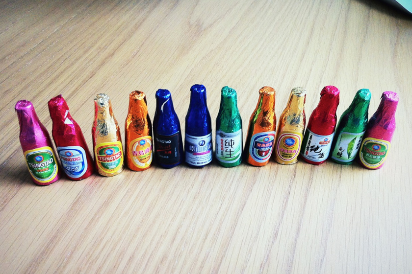

如果没有第三天拜访啤酒街和啤酒博物馆，对青岛这座城市的了解应该是不完善的。第三天退了房，本来目的地是台东，网上说这是新兴的商业区，结果因为路上太堵，就在啤酒街下了车。这个季节还不到吃海鲜的好日子，啤酒街上车多人少。啤酒海鲜是这座城市的象征，虽然我们不爱啤酒，也不是为吃海鲜而来，但还好我们索性参观了啤酒博物馆，了解了青岛啤酒的百年历史，最后这半天也算没白逛。
啤酒博物馆其实就是青岛啤酒厂址所在地，一边是百年老厂房老建筑，一边是最新的现代化厂房。本来对参观这类博物馆没有太大兴趣，毕竟我也不爱喝啤酒，但青岛啤酒博物馆设计规划得很不错，里面的工人蜡像以假乱真的程度超过许多以前去过的蜡像馆，我也第一次看到啤酒花是个什么东东，有一面展示青岛啤酒历史以来各种商标和啤酒盖的墙，让我回忆起小时候收集烟盒，火花，商标的癖好。50块的门票本来我们都觉得有点贵，觉得应该可以凭门票换瓶啤酒带走啥的，果然逛到一半有个小酒吧，免费品尝一杯啤酒和一袋啤酒花生，参观结束是个大酒吧，又可以免费品尝一杯啤酒。一次是生啤，一次是干啤，虽然我也没能尝出有啥区别。 从博物馆出来，来到台东步行街，才发现原来青岛本地人都在这里啊，但这样的步行街每个城市都有，除了步行街两旁的楼房都被刷上了涂鸦，别的也没有太多特色。
去台东八路吃了大名鼎鼎的万和春排骨米饭，就是一大碗红烧脊骨加一大碗米饭，和这个店的装修一样，很简朴，味道到还不错，特别是汤汁泡米饭，不过我总觉得这样的特色比较家常，自己家也能做出这样的味道。吃完午饭，实在觉得台东没什么值得继续逛的了，于是穿过婚纱路，打了量车直奔火车站。 在青岛的两天半，走了35公里，除了崂山那些近郊景点，市里差不多逛遍了。一路上仅在香港中路的家乐福附近发现了一家音像店，除了青岛书城也几乎没有别的小书店。这座城市有非常时尚现代化的一面，也有历史感有些沧桑的一面，有阳光海滩也有蛛网般的斜坡老街。但总觉得缺少点什么。虽然没有在8，9月青岛最美的时侯来，但也算是看到了一个褪去喧哗后的真实的青岛。